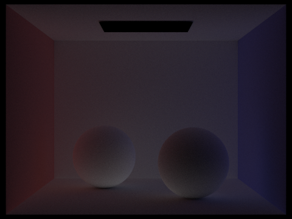

CS184/284A Spring 2025 Homework 3 Write-Up
Name: Shuang Liu
Link to webpage: cal-cs184-student.github.io/hw-webpages-ss_webpage

Overview
In this homework, we implemented a ray tracer that supports ray generation, scene intersection for triangles and spheres, bounding volume hierarchy (BVH), direct illumination, global illumination and adaptive sampling.Testing intersection through BVH highly improved the performance of our ray tracer, especially for complex geometries. In 'direct illumination' part, we accumulate 0th bounce (light source) and 1st bounce (reflection directly from light source). We also implemented both hemisphere sampling and light sampling, and compared their results. In 'global illumination' part, we implemented the indirect lighting function which is recursively called to simulate multiple bounces of light. We also used Russian roulette to terminate the recursion to get unbiased estimation and avoid computing endlessly. Finally, we use adaptive sampling to balance the rendering quality and expense by focusing on areas with high variance, resulting in a more efficient and visually appealing image.
Part 1: Ray Generation and Scene Intersection
Q1: Walk through the ray generation and primitive intersection parts of the rendering pipeline.A1:
ray generation
Given a pixel coordinate
(x, y) in the image plane, we generate a camera ray originating from the camera position and passing through the corresponding point on the sensor plane in camera space.
This ray is initially defined in camera space, and we transform it into world space using the camera-to-world (c2w) transformation matrix. To estimate the integral of radiance over a pixel, we perform supersampling by generating
ns_aa random sample points within the pixel area.
For each sample point, we invoke generate_ray() to generate a corresponding ray in world space.
We then call est_radiance_global_illumination(Ray r) multiple times to compute the radiance along these sampled rays.
The final pixel value is obtained by averaging these radiance estimates, and the result is stored in sampleBuffer. primitive intersection
For each generated ray, we check for intersections with scene primitives such as triangles and spheres.
In the function
bool Triangle::has_intersection(), we use the Möller-Trumbore algorithm to determine whether the ray intersects the triangle within the valid range r.min_t and r.max_t.
In the function Trianfle::intersect(), if an intersection occurs, we update the intersection record with the corresponding hit information.The intersection test for spheres follows a similar approach, using the quadratic equation derived from the implicit sphere equation. If the ray intersects the sphere within the valid range, we update the intersection record accordingly.
Q2: Explain the triangle intersection algorithm you implemented in your own words.
A2:
The Möller-Trumbore algorithm is a fast and efficient method for determining whether a ray intersects a triangle in 3D space. The algorithm works as follows:
1. Compute the edges of the triangle by subtracting the vertex positions: \[ E1 = p2 - p1, \quad E2 = p3 - p1 \]
2. Compute the vector from origin of the ray to the triangle vertex: \[ S = r.o - p1 \]
3. Compute auxiliary vectors using the cross product: \[ S1 = cross(r.d, E2), \quad S2 = cross(S, E1) \]
4. Solve for intersection parameters using the determinant method: \[ \text{tri_test} = \frac{1}{\text{dot}(S1, E1)} \times \begin{bmatrix} \text{dot}(S2, E2) \\ \text{dot}(S1, S) \\ \text{dot}(r.d, S2) \end{bmatrix} \]
5. Extract the intersection parameters: \[ t = \text{tri_test}.x, \quad b2 = \text{tri_test}.y, \quad b3 = \text{tri_test}.z, \quad b1 = 1 - b2 - b3 \]
6. If \( r.min\_t < t < r.max\_t \) and \( b_1, b_2, b_3 \) are all greater than zero, then the ray intersects the triangle.
7. If an intersection occurs, update the intersection record with hit information:
r.max_t = t;
isect->t = t;
isect->n = b1 * n1 + b2 * n2 + b3 * n3;
isect->primitive = this;
isect->bsdf = get_bsdf();
8. Return true if an intersection is found; otherwise, return false.
Q3: Show images with normal shading for a few small .dae files.
A3:
|
|
|
|
|
|
Part 2: Bounding Volume Hierarchy
Q1: Walk through your BVH construction algorithm. Explain the heuristic you chose for picking the splitting point.A1:
The BVH (Bounding Volume Hierarchy) construction follows a top-down recursive approach. The algorithm proceeds as follows:
1. For each primitive in the scene, I compute its bounding box using the function
get_bbox().
Then, I create a global bounding box that encompasses all the primitives by iteratively expanding it to include each primitive's bounding box.
This global bounding box serves as the root node of the BVH tree. 2. If the number of primitives in the current node is less than or equal to the given
max_leaf_size, the node is designated as a leaf node, and the recursion stops.
Otherwise, the node needs to be split into two child nodes to improve spatial partitioning. 3. To decide the splitting axis, I consider all three coordinate axes (x, y, and z). For each axis, I calculate the centroid of all primitives' bounding boxes and use it as an approximate midpoint for partitioning. I then evaluate the efficiency of splitting along each axis using a heuristic and choose the axis that yields the best partitioning.
4. The heuristic I use is inspired by the Surface Area Heuristic (SAH), which aims to minimize the expected cost of ray traversal by balancing the number of primitives and their spatial distribution.
The cost function is computed as: \[ C = NL \times AL + NR \times AR \] where: \(NL\) and \(NR\) are the number of primitives in the left and right child nodes, respectively. \(AL\) and \(AR\) are the surface areas of the bounding boxes of the left and right child nodes, respectively.
The goal is to find the axis and split point that minimize \(C\), leading to a more efficient BVH structure.
5. After determining the best splitting axis, I divide the list of primitives into two halves based on their centroids along the chosen axis.
6. After splitting the primitives, I recursively call
construct_bvh() on the left and right subsets to build the BVH tree Hierarchically. 7. The process continues until all nodes contain at most
max_leaf_size primitives, resulting in a balanced BVH structure that optimizes ray traversal efficiency. Q2: Show images with normal shading for a few large .dae files that you can only render with BVH acceleration.
A2:
Q3: Compare rendering times on a few scenes with moderately complex geometries with and without BVH acceleration. Present your results in a one-paragraph analysis.
A3:
| File Name | Rendering Time (Without BVH) | Rendering Time (With BVH) |
|---|---|---|
| cow.dae | 0.1721s | 18.4269s |
| beetle.dae | 0.1255s | 28.0541s |
| teapot.dae | 0.1333s | 7.7631s |
Overall, the BVH acceleration significantly improved rendering times for complex geometries. For different scenes, the performance gain varied, with some scenes showing a more substantial improvement than others. This may be due to the varying complexity and distribution of primitives in each scene.
Part 3: Direct Illumination
Q1: Walk through both implementations of the direct lighting function.A1:
In the function
DiffuseBSDF::f(), I use Lambertian reflectance to compute the outgoing radiance for diffuse surfaces. The formula is as follows:
\[
f_r(\omega_o, \omega_i) = \frac{\text{albedo}}{\pi}
\]
where albedo represents the diffuse reflectance of the surface.
In the function
DiffuseBSDF::sample_f(), I use cosine-weighted sampling to generate a random incoming light direction wi. The probability density function (PDF) is computed as:
\[
\text{PDF}(\omega_i) = \frac{\cos(\theta)}{\pi}
\]
where \(\theta\) is the angle between the surface normal and the incoming direction, corresponding to wi->z in object space. The outgoing radiance is computed using f(wo, *wi).
In the function
zero_bounce_radiance(), I retrieve the emission of the surface using isect.bsdf->get_emission().
In the function
one_bounce_radiance(), I select either estimate_direct_lighting_hemisphere(r, isect) or estimate_direct_lighting_importance(r, isect), depending on the value of direct_hemisphere_sample.
Hemisphere Sampling Method
In
estimate_direct_lighting_hemisphere(), I perform the following steps:1. Call
isect.bsdf->sample_f(w_out, &wi_d, &pdf) multiple times (equal to num_samples).2. Compute
cosTheta = dot(wi_d, Vector3D(0, 0, 1)) in object space.3. Construct the next ray
r_next with:Origin:
hit_p (current intersection point).Direction:
wi_d (sampled incoming light direction).4. If the next intersection is a light source, compute its radiance using
isect.bsdf->get_emission() and accumulate the result.5. Finally, normalize the accumulated result by dividing it by
num_samples. Importance Sampling Method
In
estimate_direct_lighting_importance(), I iterate over all the lights in the scene using:
for (auto light = scene->lights.begin(); light != scene->lights.end(); light++)1. Sample the light using:
Vector3D L = light->sample_L(hit_p, &wi_d, &distToLight, &pdf);cosTheta = dot(wi_d, isect.n).3. Construct the shadow ray
r_next:Origin:
hit_p.Direction:
wi_d.Set
r_next.max_t = (double)distToLight - EPS_F to ensure the ray does not extend beyond the light source.4. If the light is not blocked, compute the radiance using Monte Carlo integration:
L_light += L * f * cosTheta / pdf;6. Finally, normalize the accumulated result by the number of samples.
In the function
est_radiance_global_illumination(), I add zero_bounce_radiance() and one_bounce_radiance() to compute the total radiance.Overall, importance sampling improves efficiency by focusing samples only in the directions where light actually comes from, reducing variance compared to uniform hemisphere sampling.
Q2: Show some images rendered with both implementations of the direct lighting function.
A2:
|
|
|
|
|
|
|
|
|
Q3: Focus on one particular scene with at least one area light and compare the noise levels in soft shadows when rendering with 1, 4, 16, and 64 light rays (the -l flag) and with 1 sample per pixel (the -s flag) using light sampling, not uniform hemisphere sampling.
A3:
|
|
|
|
|
|
Point light sources cause hard shadows, while area light sources create soft shadows. We control the number of samples per pixel to ensure that the noise level is only affected by the number of light rays, not pixel sampling. As we can see from the images, as the number of light rays increases, the noise level decreases significantly. This is because more light rays provide more information about the light distribution, resulting in smoother and more accurate soft shadows.
Q4: Compare the results between uniform hemisphere sampling and lighting sampling in a one-paragraph analysis.
A4:
In our comparison between uniform hemisphere sampling and light sampling, we observed that uniform hemisphere sampling produces significantly more noise and takes longer to render. The primary reason for the higher noise is that uniform hemisphere sampling distributes rays evenly in all directions, leading to many samples that contribute little to direct illumination, especially when the area light is relatively small. This results in inefficient sampling, requiring more rays to converge to a smooth shadow. On the other hand, light sampling directs rays preferentially toward the light source, ensuring that more samples contribute meaningfully to the illumination calculation. This improves convergence, reducing noise with fewer samples. Additionally, because fewer rays are wasted on unimportant directions, light sampling achieves a shorter render time compared to uniform hemisphere sampling while also producing smoother soft shadows.
Part 4: Global Illumination
Q1: Walk through your implementation of the indirect lighting function.A1:
In the function
at_least_one_bounce_radiance(), it computes both direct and indirect illumination.For indirect illumination, if
r_next.depth is within max_ray_depth, it uses Russian roulette with a probability of 0.35 to decide whether to continue the ray or terminate it.
If it continues, it calls at_least_one_bounce_radiance(r_next, i_next) recursively to compute the indirect lighting.
If r_next.depth exceeds max_ray_depth, it stops.
It is worth mentioning that the radiance is accumulated using the formula L_out += L * f * cosTheta / pdf / rr, where rr is the Russian roulette probability.
In the function
est_radiance_global_illumination(), it computes the zero_bounce_radiance() and at_least_one_bounce_radiance() to obtain the total radiance.
Q2: Show some images rendered with global (direct and indirect) illumination. Use 1024 samples per pixel.
A2:
Q3: Pick one scene and compare rendered views first with only direct illumination, then only indirect illumination. Use 1024 samples per pixel.
A3:
|
|
|
Q4: For CBbunny.dae, render the mth bounce of light with max_ray_depth set to 0, 1, 2, 3, 4, and 5 (the -m flag), and isAccumBounces=false. Explain in your write-up what you see for the 2nd and 3rd bounce of light, and how it contributes to the quality of the rendered image compared to rasterization. Use 1024 samples per pixel.
A4:
|
|
|
|
|
|
|
|
|
To tell the difference between the 2nd and 3rd bounce of light, it is more obvious in rendered spheres image.
|

|
|
From the images above, we observe that the 2nd bounce of light primarily reflects off the bottom surfaces of the spheres. This occurs because the light first bounces off the floor before reaching the undersides of the spheres.
For the 3rd bounce, most of the reflected light originates from the shadowed areas on the floor. This happens as the light first reflects off the floor, then the bottom of the sphere, and finally from the shadowed regions on the floor.
When describing the contribution of different light bounces to the rendered image, you can attribute them based on their influence on realism and indirect illumination:
2nd Bounce Contribution: Enhances realism by introducing subtle indirect lighting, particularly under objects, making them appear more grounded in the scene.
3rd Bounce Contribution: Further refines global illumination by illuminating shadowed areas, reducing harsh contrasts seen in rasterization.
Compared to rasterization, which lacks physically accurate indirect lighting, these additional bounces contribute to a more realistic distribution of light, capturing soft shadows and subtle ambient effects that improve overall image quality.
Adding the mth bounce of light together, we can get the accumulated image.
Q5: For CBbunny.dae, output the Russian Roulette rendering with max_ray_depth set to 0, 1, 2, 3, 4, and 100(the -m flag). Use 1024 samples per pixel.
A5:
|
|
|
|
|
|
|
|
|
Q6: Pick one scene and compare rendered views with various sample-per-pixel rates, including at least 1, 2, 4, 8, 16, 64, and 1024. Use 4 light rays.
A6:
|
|
|

|
|
|
|
|
Part 5: Adaptive Sampling
Q1: Explain adaptive sampling. Walk through your implementation of the adaptive sampling.A1:
Adaptive sampling optimizes rendering by dynamically adjusting the number of samples per pixel based on variance estimation.
In
raytrace_pixel(), rays are traced iteratively, accumulating radiance (s1) and squared intensity values (s2).
Every samplesPerBatch, the mean (μ) and variance (var) are computed, and a confidence interval (I) is estimated.
If I falls below a convergence threshold (cvoff), sampling terminates early, ensuring efficient computation. This method allocates more samples to high-variance regions while reducing redundancy in smooth areas, maintaining unbiased estimation while significantly improving rendering efficiency and convergence speed.
As formulas are listed clearly in the guides of hw3, I will not repeat them here.
Q2: Pick two scenes and render them with at least 2048 samples per pixel.
A2: